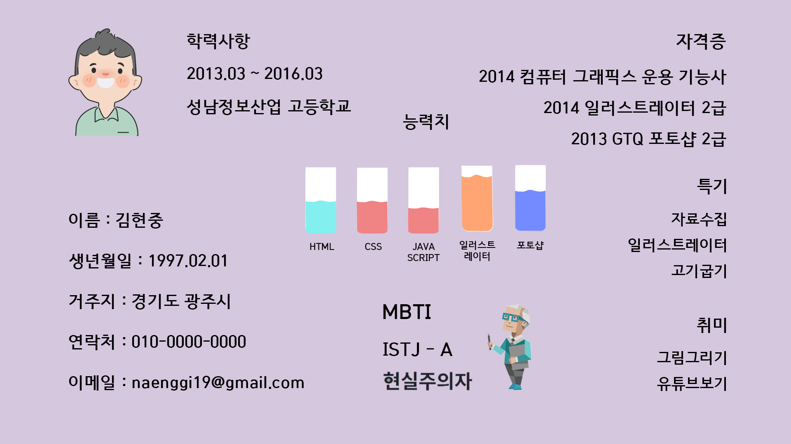
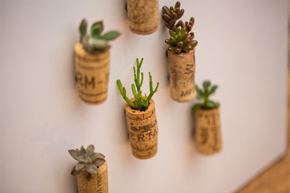
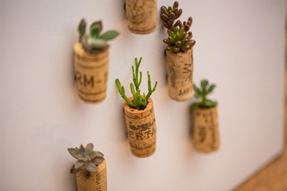
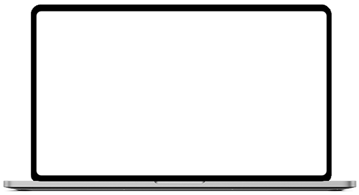

- Name : 김현중
- Birth : 1997. 02. 01
- Address : 경기도 광주시 탄벌동
- Phone : 010-2494-1174
- Email : naenggi19@gmail.com
Loading ...
Kim Hyun Joong
CREATIVE DESIGNER
생각하라 그리고 표현하라 사용자에게 있어 필요한것을 생각하고 그에 맞는 디자인을 구성하고 표현할 준비가 되어있는 웹 퍼블리셔 김현중 입니다.
스크롤바를 내리면 작품을 감상할 수 있습니다.
ABOUT ME
Vision
지금까지의 배우고 익혀왔던 지식에 만족하지 않고 계속해서 지식을 탐구하며
디자인에 있어 트렌드의 변화 속도에 뒤처지지 않으면서 지속 가능한 디자인하는 것이
저의 목표입니다.
웹 퍼블리싱을 도전하게 된 계기는
이 분야에 대한 디자인의 효율성과 디자인의 적합성을 높이고 싶어 시작하게
되었습니다.
배우다 보니 점점 흥미도 생기고 탐구욕이 생기게 되어 웹퍼블리싱 분야로 나아가고
싶다고 생각하게 되었습니다.
최고가 아니더라도 최선을다하는 사람이 되겠습니다.
WHAT CAN I DO?
'어떤 상황이든 때에 맞는 디자인으로 더 나은 상용자경험 제공하자'는 마음으로 항상
노력하고 있습니다.
HTML5 & CSS3 시멘틱 페이지를 ZenCoding(EMMET), SCSS로 코딩할 수 있습니다.
클라이언트의 요구사항을 적극적으로 반영하는 UI/UX 디자인 능력은 저의 최고의 장점 중 하나입니다.
JS 플러그인을 사용에 그치지 않고 필요한 기능을 직접 구현할 수 있는
Javascript/jQuery/React 로직구현이 가능합니다.
새로운 코딩기법과 디자인툴을 배우는 것이 정말 즐겁습니다.
- ZenCoding(EMMET) & SCSS
- Javascript & jQuery/React 로직구현
- MVC 패턴의 페이지 구성
- RWD 반응형 웹디자인
- HTML5 DTD 유효성 검사 통과
- 웹접근성을 향상시킨 시멘틱 페이지
- Photoshop/Illustrator를 이용한 컨텐츠 제작
SKILL
탁월한 UX분석능력과 Emmet/Zencoding 활용
-
UX/UI 디자인
사용자의 Context와 Needs를 파악하고
Problem을 해결할 수 있는 Insight 도출 -
반응형 웹표준
시멘틱을 지향하는 HTML/CSS 작성능력 보유,
자바스크립트와 제이쿼리 기반의 로직 구현 가능
SASS 전처리기와 리액트 라이브러리 활용
-
Sass Preprocessor
협업 웹코딩의 필수 기술인 SCSS를 이용한
CSS 스타일링을 원활이 사용할 수 있습니다. -
리액트 라이브러리
국내 프론트엔드 시장의 대세 리액트 코드구현,
자바스크립트와 제이쿼리 기반의 로직구현 가능
ABILITY
젠코딩
HTML5
CSS
jQuery
웹기획
디자인
온라인 이력서
'어떤 상황이든 때에 맞는 디자인으로 더 나은 상용자경험 제공하자'는 생각으로
항상 노력하고 있습니다.
HTML5 & CSS3 시멘틱 페이지를 ZenCoding(EMMET)으로 작성할 수 있습니다.
클라이언트의 요구사항을 적극적으로 반영하는 UI/UX 디자인 능력은 저의 최고의
장점중 하나입니다.
JS 플러그인을 사용에 그치지 않고 필요한 기능을 직접 구현할 수 있는
Javascript/jQuery/React 로직구현이 가능합니다.
새로운 코딩기법과 디자인툴을 배우는 것이 정말 즐겁습니다.

UXDESIGN
작품리스트
이전 다음내가 생각하는 사용자경험 - User Experience
UX의 정의에 대해서 알아보고, 다양한 UX의 사례들, 특히나 성공적인 UX라 불리는 사례들을
보면서 사용자 경험을 바탕으로 어떤 제품이나 서비스를 구축하는 것의 중요성을 깨달았다.
내가 생각하는 UX란, 사용자가 원하는 기능을 사용할 때 사용자가 불편함을 느끼지 않고
사용할 수 있도록 하고, 원하는 활동을 편리하게 제품이나 서비스를 이용하여 할 수 있도록
하는 것이라는 생각이 들었다.
사전적인 의미에서 UX란 사람의 여러 감각과 감정의 총합을 뜻하는데, 내가 생각하는 UX는
‘불편함’이라는, 혹은 다르게 불릴 수도 있는 부정적인 감정을 최소화시키는 것이라는 생각이
든다.
서울시 버스 도착 알림 서비스

Design과 UX의 차이
- 1. 와인 코르크 마개
-
와인의 코르크 마개를 작은 다육식물
화분으로 업사이클링(Upcycling)한 사례
 

- 2. 물티슈 보호 캡
-
오염, 수분증발을 방지하는 물티슈 보호
캡을 콘센트 보호 덮개로 활용한 사례


PORTFOLIO
빽다방(리뉴얼 디자인)
PAIK’S COFFEE Renewal Design
기존 웹사이트의 개선사항을 찾아 메인페이지를 리뉴얼 디자인하였습니다.
빽다방의 컬러 아이덴티티를 사용하여 브랜드 이미지를 강조하였으며,
간결한 레이아웃으로 전달하고자 하는 내용을 보기 쉽게 배치하였습니다.
작업 프로그램 : Photoshop, Visual Studio Code
작업기여도 100%개인작업

이삭 토스트(리뉴얼 디자인)
ISAAC TOAST Renewal Design
기존 웹사이트의 개선사항을 찾아 메인페이지를 리뉴얼 디자인하였습니다.
빽다방의 컬러 아이덴티티를 사용하여 브랜드 이미지를 강조하였으며,
간결한 레이아웃으로 전달하고자 하는 내용을 보기 쉽게 배치하였습니다.
작업 프로그램 : Photoshop, Visual Studio Code
작업기여도 100%개인작업
단양 여행 사이트 디자인 (리뉴얼 디자인)
DANYANG TRAVEL Siet Renewal Design
기존 웹사이트의 개선사항을 찾아 메인페이지를 리뉴얼 디자인하였습니다.
빽다방의 컬러 아이덴티티를 사용하여 브랜드 이미지를 강조하였으며,
간결한 레이아웃으로 전달하고자 하는 내용을 보기 쉽게 배치하였습니다.
작업 프로그램 : Photoshop, Visual Studio Code
작업기여도 100%개인작업
필요한 기능을 직접 JavaScript/Jquery/React 로직 구현
'스타일을 창조하여 그것을 섬세한 디자인으로 탈바꿈 시키고싶다' 는 마음으로 매일
노력하고 있습니다.
HTML5 & CSS3 시멘틱 페이지를 SCSS, ZenCoding(EMMET)으로 작성할 수 있습니다.
클라이언트의 요구사항을 적극적으로 반영하는 UI/UX 디자인 능력은 저의 최고의 장점중
하나입니다.
JS 플러그인을 사용에 그치지 않고 필요한 기능을 직접 구현할 수 있는 Javascript/jQuery
로직구현이 가능합니다.
새로운 코딩기법과 디자인을 배우는 것이 정말 즐겁습니다.
for문과 다중if문을 결합한 로직구현
SASS, EMMET 활용
페이지 전체의 계층구조를 입체적으로 분석할 수 있는 실무형 코딩기법 Emmet을
사용할 수 있어
업무시간을 단축시킬 수 있을뿐 아니라,
유지보수도 더욱 쉽고 정확하게 처리할 수 있습니다.
SCSS의 가장 큰 장점인 변수와 Mixin 기능을 적극 활용하여 CSS 스타일링을 할 수
있습니다.
Sprite-Image와 IR(Image Replacement)기법에 능숙
id, class를 남발하지 않고 원하는 요소를 셀렉팅할 수 있는 능력,
CSS3 Transform, Transition, Keyframes을 이용한 애니메이션 효과 구현
CONTACT
귀사에 입사를 지원합니다.
저의 웹퍼블리싱 이야기 입니다.
질문을 선택하시면 정리된 답변을 보실 수 있습니다.
- 1. HTML5의 가장 큰 특징은 무엇일까요?
- 답변내용
- 2. 웹표준, 웹접근성, 시멘틱웹에 대하여 설명하세요.
- 답변내용
- 3. 자바스크립트 라이브러리 사용시 가장 큰 장점은?
- 답변내용
- 4. setInterval()은 어디에 사용할 수 있을까요?
- 답변내용
- 5. CSS 미디어쿼리는 어떤 역할을 수행하는지 답하시오.
- 답변내용
더욱 궁금하신 점은 면접시 말씀드리겠습니다. 감사합니다~!
본 페이지는 저의 개인 포트폴리오용으로 제작되었으며, 상업적인 목적과 관련이 없음을
알려드립니다.